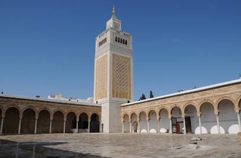
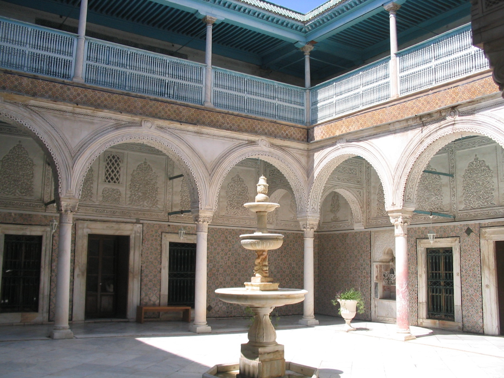
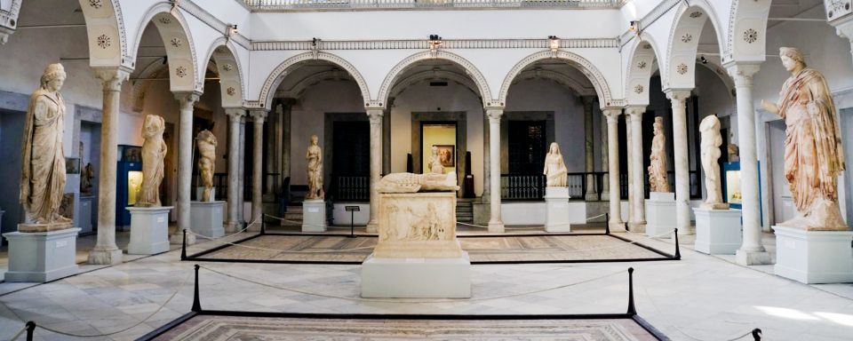
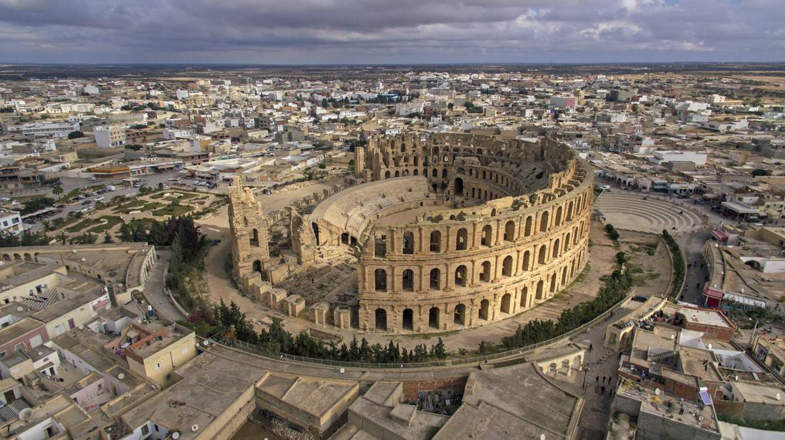
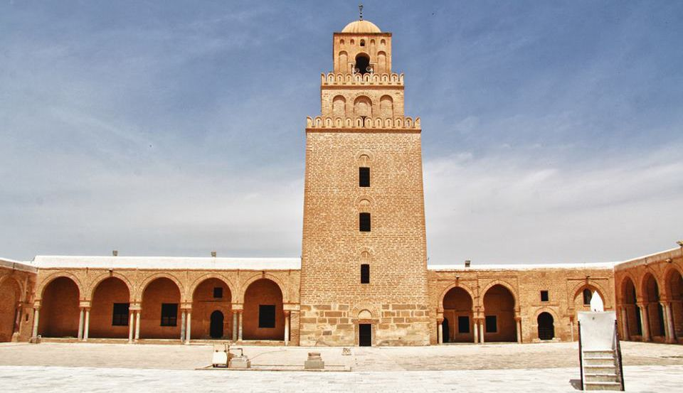
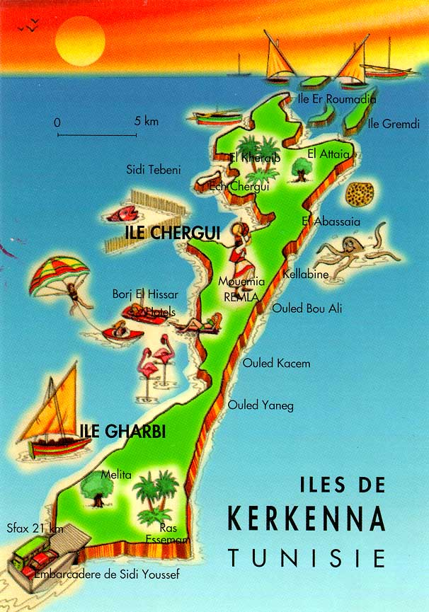
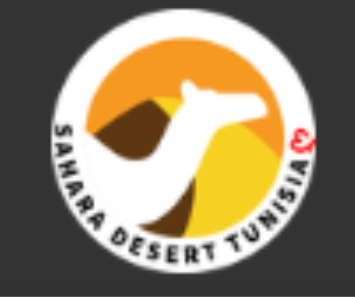
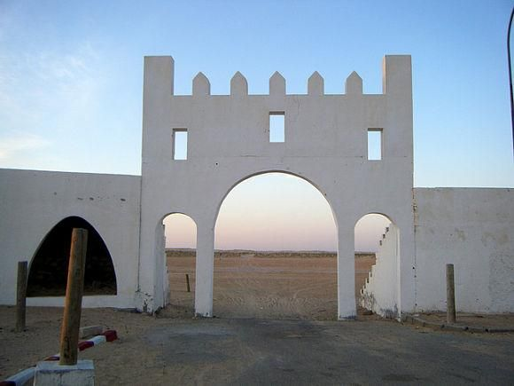
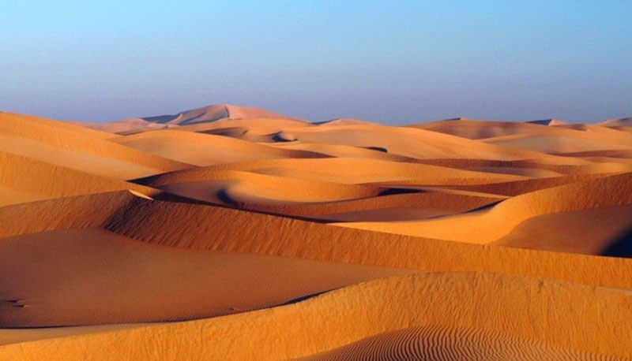

Carrusel de Imágenes


Cambio moneda
1 EUR son 3.3945675177 TND
Mapa estático
Mapa dinámico
Carga ficheros
Este navegador soporta el API File
Rutas por Túnez
Nombre: Túnez capital
Tipo: Arquitectónica
Medio de Transporte: A pie
Duración: 1D
Agencia: Sin agencia
Descripción: La capital tunecina, es, podríamos decir, un tercio mediterránea, un tercio europea y un tercio africana. Esta ciudad tiene algunos de los contrastes más fuertes e interesantes del norte de África. La mezcla de culturas e influencias es clara y un paseo por sus calles lo demuestra. Mezquita histórica e importante universidad islámica, la más antigua de Túnez, con un minarete de 43 m.Es el museo de las artes y el patrimonio tradicional de Túnez. Su arquitectura es uno de los ejemplos más hermosos de las construcciones del siglo XVII, ubicado en el centro de la Medina de Túnez. En su colección se muestran la herencia de los años y el nombre del museo es el del antiguo dueño del palacio en el que se encuentra instalado.Construido dentro de uno de los mejores palacios del país, el Museo Bardo contiene una de las mayores colecciones de mosaicos romanos del mundo, los cuales solían decorar las presuntuosas casas romanas que puede que visites en tu recorrido por el país.
Personas Adecuadas: Todo tipo de personas
Lugar de Inicio: Túnez
Dirección de Inicio: 30 Rue Jamaa Ez Zitouna, Tunis, Túnez
Coordenadas: Latitud=10.171288497323301, Longitud=36.79774470644965, Altitud=4
Referencias:
https://www.google.com/maps/place/Mezquita+Zitouna/@36.7955421,10.1698796,17z/data=!4m6!3m5!1s0x12fd34754f0de50d:0xd6055eb2c24a4f31!8m2!3d36.7973267!4d10.1712377!16s%2Fm%2F05f50wj?entry=ttuhttps://www.economiadigital.es/tendenciashoy/destinos/tunez-de-la-capital-al-desierto-en-un-roadtrip-de-10-dias_20076846_102.html
https://sobretunez.com/2009/11/05/dar-ben-abdallah-el-museo-de-las-costumbres/
Hito Nombre: Mezquita Zitouna
Descripción: Mezquita histórica e importante universidad islámica, la más antigua de Túnez, con un minarete de 43 m.
Coordenadas: Latitud=10.171288497323301, Longitud=36.79774470644965, Altitud=4
Distancia al Hito Anterior: 0 km
Hito Nombre: Palacio Dar ben Abdallah
Descripción: Es el museo de las artes y el patrimonio tradicional de Túnez. Su arquitectura es uno de los ejemplos más hermosos de las construcciones del siglo XVII, ubicado en el centro de la Medina de Túnez. En su colección se muestran la herencia de los años y el nombre del museo es el del antiguo dueño del palacio en el que se encuentra instalado.
Coordenadas: Latitud=10.173785474972679, Longitud=36.79444648864582, Altitud=4
Distancia al Hito Anterior: 4.6 km
Hito Nombre: Le musée national du Bardo
Descripción: Construido dentro de uno de los mejores palacios del país, el Museo Bardo contiene una de las mayores colecciones de mosaicos romanos del mundo, los cuales solían decorar las presuntuosas casas romanas que puede que visites en tu recorrido por el país.
Coordenadas: Latitud=10.134648985557394, Longitud=36.809444827906646, Altitud=4
Distancia al Hito Anterior: 0.6 km
Recomendación: 8
Nombre: Alrededores de Sfax
Tipo: PaisajísticaArquitectónica
Medio de Transporte: Coche y ferry
Duración: 1D
Agencia: Sin agencia
Descripción: Ruta que combina mar y tierra recorrindo lugares historicos del pais de Túnez y sus playas. El anfiteatro en El Djem fue construido por los romanos bajo las órdenes del procónsul Gordiano, quién fue proclamado emperador en Thysdrus alrededor del 238 y era principalmente utilizado para espectáculos de gladiadores y carreras de carros de pequeño formato. La Mezquita más importante de la ciudad de SfaxLa sensación de pasar unos días en las islas de Kerkennah es similar a la de perderse en otras orillas del Mar Mediterráneo, ya sea en Sicilia, Cerdeña o cualquier isla griega.
Personas Adecuadas: Personas en buena forma física
Lugar de Inicio: Sfax
Dirección de Inicio: Anfiteatro de El Djem
Coordenadas: Latitud=10.706617336438631, Longitud=35.2982756564453, Altitud=35.3
Referencias:
https://www.google.com/maps/place/Anfiteatro+de+El+Djem/@35.2964865,10.7043254,17z/data=!3m1!4b1!4m6!3m5!1s0x1301fc9cdf4f5df5:0xf56c08802fb823a8!8m2!3d35.2964821!4d10.7069003!16s%2Fg%2F120rrdck?entry=ttuhttps://www.somoutdoors.com/lugares-donde-viajar/tunez-por-tu-cuenta/
https://blog-tunez.com/otros-destinos-de-tunez/islas-kerkennah/
https://en.wikipedia.org/wiki/Great_Mosque_of_Sfax
Hito Nombre: Anfiteatro en El Djem
Descripción: El anfiteatro en El Djem fue construido por los romanos bajo las órdenes del procónsul Gordiano, quién fue proclamado emperador en Thysdrus alrededor del 238 y era principalmente utilizado para espectáculos de gladiadores y carreras de carros de pequeño formato.
Coordenadas: Latitud=10.706617336438631, Longitud=35.2982756564453, Altitud=35.3
Distancia al Hito Anterior: 0 km
Hito Nombre: Great Mosque of Sfax
Descripción: La Mezquita más importante de la ciudad de Sfax
Coordenadas: Latitud=10.761733371909365, Longitud=34.73615780480023, Altitud=0
Distancia al Hito Anterior: 65 km
Hito Nombre: Islas Kerkennah
Descripción: La sensación de pasar unos días en las islas de Kerkennah es similar a la de perderse en otras orillas del Mar Mediterráneo, ya sea en Sicilia, Cerdeña o cualquier isla griega.
Coordenadas: Latitud=11.140731886583168, Longitud=34.72991197588472, Altitud=0
Distancia al Hito Anterior: 55 km
Recomendación: 7
Nombre: Douz
Tipo: Paisajística
Medio de Transporte: A pie y camello
Duración: 1D
Agencia: sahara-tunisia
Descripción: Ruta guiada por el desierto del Sahara Comienzo de la ruta donde se ubica la agencia turísticaEntrada al desierto del SaharaEl desierto del Sahara es el desierto cálido más grande del mundo, con más de 9 400 000 km2 de superficie.
Personas Adecuadas: Personas en buena forma física
Lugar de Inicio: Sahara-tunisia
Dirección de Inicio: Souk Douz, 4260, Túnez
Coordenadas: Latitud=9.025019626580125, Longitud=33.457376514557566, Altitud=64
Referencias:
https://www.sahara-tunisia.com/https://es.wikipedia.org/wiki/S%C3%A1hara
https://www.economiadigital.es/tendenciashoy/destinos/tunez-de-la-capital-al-desierto-en-un-roadtrip-de-10-dias_20076846_102.html
https://www.google.com/maps/place/Sahara+Desert+Tunisia+%E1%83%A6/@33.4578928,9.0217406,16.75z/data=!4m15!1m8!3m7!1s0x125687f0a48f8aa3:0xf20af06731ebe68d!2zRG91eiwgVMO6bmV6!3b1!8m2!3d33.4614354!4d9.0294708!16zL20vMDQzMXo4!3m5!1s0x125687f0052ca891:0x547cf34c40e7aa1f!8m2!3d33.4571621!4d9.0250329!16s%2Fg%2F11ft2cj7zt?entry=ttu
Hito Nombre: Sahara Desert Tunisia ღ
Descripción: Comienzo de la ruta donde se ubica la agencia turística
Coordenadas: Latitud=9.025019626580125, Longitud=33.457376514557566, Altitud=64
Distancia al Hito Anterior: 6 km
Hito Nombre: La Porta del Sahara
Descripción: Entrada al desierto del Sahara
Coordenadas: Latitud=9.038192239017691, Longitud=33.437107814794864, Altitud=63
Distancia al Hito Anterior: 6 km
Hito Nombre: Desierto del Sahara
Descripción: El desierto del Sahara es el desierto cálido más grande del mundo, con más de 9 400 000 km2 de superficie.
Coordenadas: Latitud=9.0708610000714013, Longitud=33.479258386747844, Altitud=63
Distancia al Hito Anterior: 6 km
Recomendación: 10